Git 安裝
下載安裝程式
- 先到Git的網站 http://git-scm.com/ 下載安裝程式，進入首頁後會看到畫面中有『Downloads for Windows』的連結，點選後會直接下載Winddows版本的GIT，如果要下載其他作業系統的GIT請點選『Downloads』進去後就會看到Mac OS X、Windows、Linux、Solaris的版本供下載。
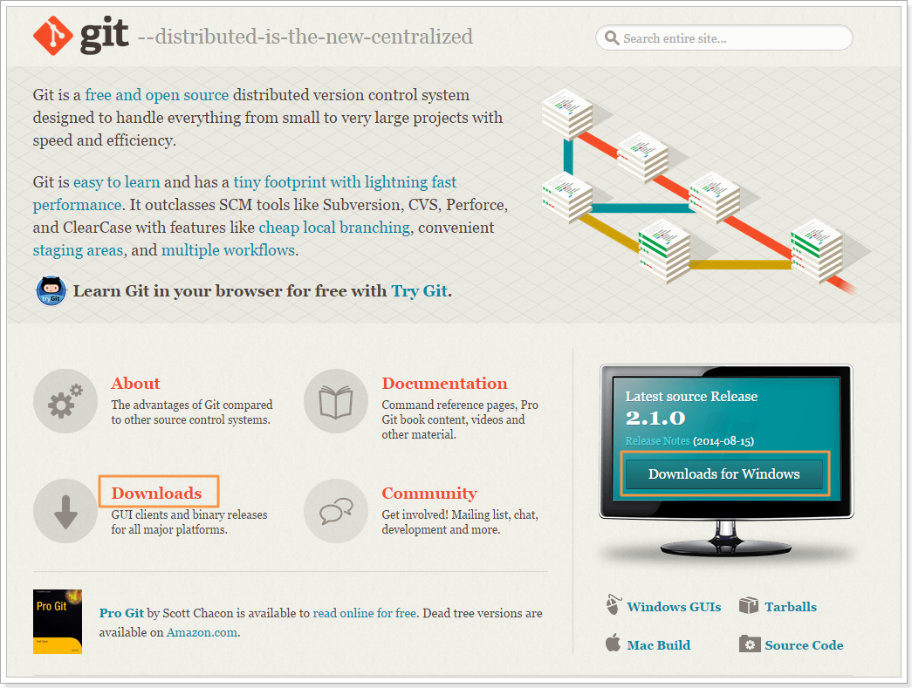
安裝主程式
- 下載完成後，執行安裝程式，選擇開始安裝並同意版權聲明
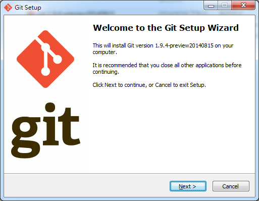
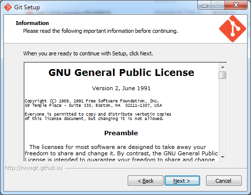
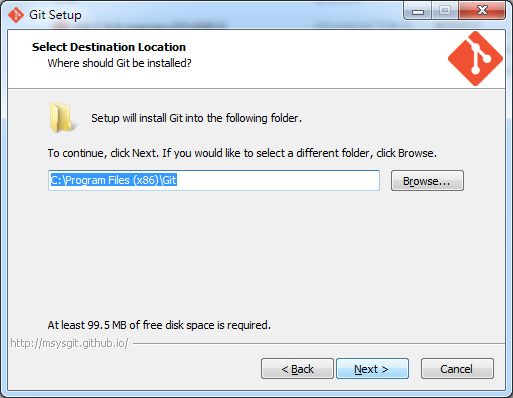
- 元件安裝，下圖中預設值『Additional icons』是不勾選的，勾選後會將程式建立捷徑到『桌面』及『Quick Launch』，Quick Launch是Windows下專門放程式捷徑的資料夾，如果要啟用在『工作列點選滑鼠右鍵->工具列->新增工具列』，會出現一個選擇資料夾的視窗，直接貼上『%userprofile%\AppData\Roaming\Microsoft\Internet Explorer\Quick Launch』確認後在工具列下方就會出現一個『Quick Launch』的快捷工具列，裡面就可以看到『Git Bash』的捷徑
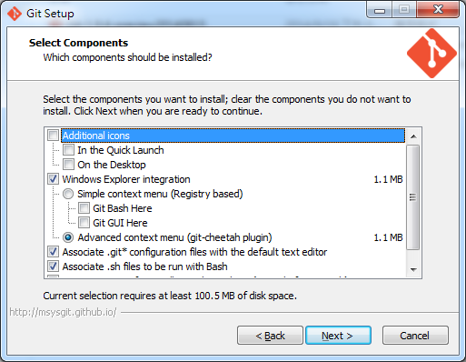
- 另外一個選項是會在滑鼠右鍵的功能列中加入Git的選項，預設值為『Advanced context menu(git-cheetah Plugin)』
- 『Advanced context menu(git-cheetah Plugin)』安裝完後的畫面如下
- 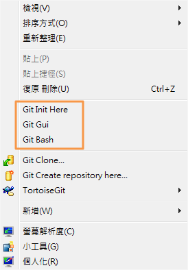
- 『Simple context menu(Registry based)』安裝完後的畫面如下
- 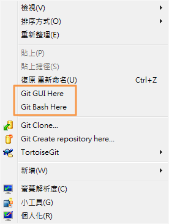
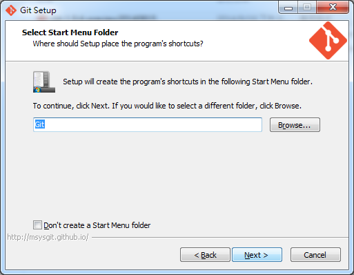
- PATH 環境變數，一樣使用預設值『Use Git Bash only』，此選項也不會對PATH環境變數做修改
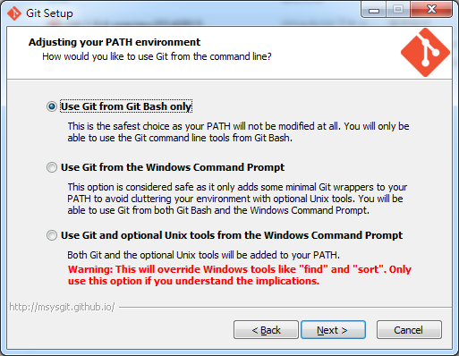
- 在這一步請選擇Use(Tortoise)Plink，如果有安裝TortoiseGit，在安裝Git時會自動帶入Plink的程式路徑『C:\Program Files\TortoiseGit\bin\TortoiseGitPlink.exe』
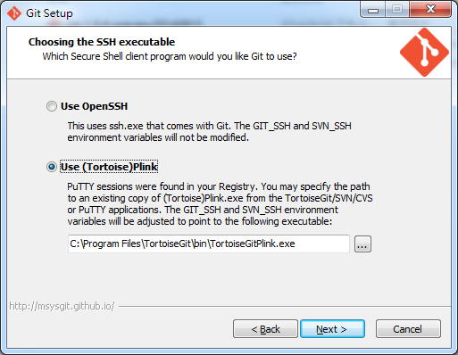
- 設定斷行字元轉換模式，在Linux作業系統下，文字檔案的斷行字元為『LF(\n)』1個Byte，在Windows作業系統下，文字檔案的斷行字元卻是『CRLF(\r\n)』2個Byte，為了處理這個問題，Git在安裝時有一個自動轉換斷行字元的選項。自動從Git檔案庫(Repo)與本機的檔案庫自動轉換斷行字元，在這邊使用預設的選項即可『Checkout Windows-style,commit Unix-style line endings』
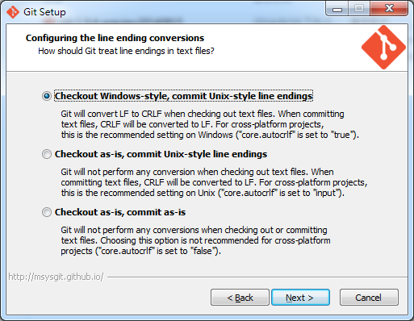
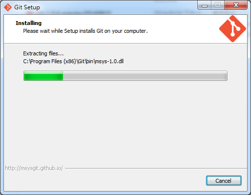
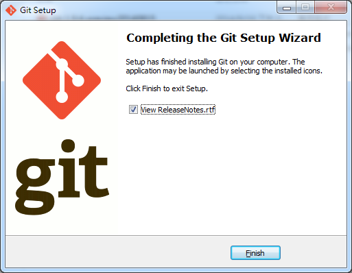